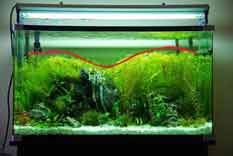

Trimming Your Aquarium Plants
Hedging and trimming aquatic plants is necessary to maintain the health and visual beauty of your aquarium. In the right conditions aquarium plants will grow very quickly. Speed of growth is dependent on the type of plant. Stem plants will grow the fastest, followed by foreground plants, potted plants and then ferns and moss will be the slowest.
It is important to monitor your plants size, complications can occur when plants reach the surface and block light to lower plants in the aquarium. Similar to garden plants, constant cutting back of plants, especially stem plants, will cause them to grow into thicker hedge like structures. Initial plants will grow quickly and start to fill out the aquarium. After the first initial month or so they may become too large and take up too much space. In this case they need to be trimmed.
Stem Plants
- Stem plants will need to be trimmed and cut more often than any other plant type in the aquarium. It is a very good idea to plan what ultimate vision you have for your planted soft scape. This will make it easier to decide what length to cut the plants and what shape you need.
- Stem plants should be trimmed by taking off the top 2 inches of the plant. Dependant on aquarium height and size this can be adjusted but it is a good idea to trim no more than half of the existing stem.
- Stem plants are unique in that they are very easily propagated. Cut stems can be placed an inch into the substrate where they will quickly form a root system and begin growing.
- It is useful to keep this in mind when purchasing aquarium plants. Stem plants should only be bought in smaller quantities to fit your aquarium because they grow very quickly. Cut stems can then be planted and will grow into full size stems.
Potted Plants
- Potted plants such as amazon swords, crypts, hair grass, crinums and red tiger lily's need far less maintenance. These plants will grow slower than stem plants and can be difficult to keep at preferred size.
- If these plants become too thick their leaves can be easily cut at the base of the roots and removed from the aquarium. The same process should be done for yellowing or dieing leaves. These pollute the aquarium water with nitrates and strain the plants health. Cutting directly across the leaves to shorten them can put stress on the plant and look unsightly. It is recommended to choose potted middle-ground plants that will grow to fit their location as it can be difficult to trim them smaller.
Moss
- Moss can be carefully trimmed and removed from the aquarium with scissors. Moss will usually grow slowly in good planted conditions and faster in water with higher nitrates.
- From the planting guide the new cuts of moss can either be tied to other exposed areas of hardscape with cotton thread, or weighed down with a coin until attached to the driftwood or rock.
Java Fern & Anubias
- Java fern and anubias can be easily propagated by splitting the rhizome at the base of the plants. The plant may have to be removed from wood or rock in the aquarium. They are extremely hardy plants and there is little risk of damaging the plant by pulling it's roots off the rock or wood.
- To propagate and divide the plant use a very sharp knife or razor blade and cut the solid section at the base known as a 'rhizome' into two or three sections depending on the plant size. Reattach the plant to their desired positions in the aquarium using cotton string or wedging them into position and watch them grow back.
For challenging but rewarding topic that will give you ideas on shaping and maintaining your aquarium to be an award winning tank, continue to this guide on aquascaping that will help you explore and integrate the principles of design and nature into your aquarium.